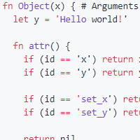

GitHub

SussLang - A closure-based language
Dec 20, 2020
A while back I made a closure-based language, dubbed SussLang, in Python 3. While there are some things I would change about it, I'm still proud of the final product. Check it out here!
GitHub
ChocAn Redux
Dec 20, 2020
Java 15 and SQLite implementation of Chocoholics Anonymous found in Object Oriented and Classical Software Engineering, Appendix A.